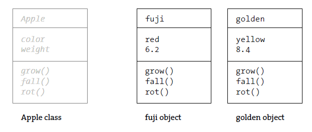

Object-Oriented Programming
Resources:
Shiffman - 6.1: Introduction to Object-Oriented Programming with ES6 - p5.js
Shiffman - 6.2: Classes in JavaScript with ES6 - p5.js
Shiffman - 6.3: Constructor Arguments with Classes in JavaScript - p5.js
Syntax Introduced:
Classes and Objects
Variables and functions are the building blocks of software.
A class defines a group of methods (functions and fields (variables). An object is a single instance of a class.
Object-oriented programming further extends the modularity of using variables and writing functions by allowing related functions to be grouped together.

Classes
To make a software simulation of an Apple class, the grow() method might have inputs for temperature and moisture.
The grow() method can increase the weight field of the apple based on these inputs. The fall() method can continually check the weight and cause the apple to fall to the ground when the weight goes above a threshold. The rot() method could then take over, beginning to decrease the value of the weight field and change the color fields.
Name: AppleFields: color, weight
Methods: grow(), fall(), rot()
Name: Butterfly
Fields: species, gender
Methods: flapWings(), land()
Name: Radio
Fields: frequency, volume
Methods: turnOn(), tune(), setVolume()
Name: Car
Fields: make, model, color, year
Methods: accelerate(), brake(), turn()
Objects
Objects are created from a class and a class describes a set of fields and methods.
An instance of a class is a variable, and like other variables, it must have a unique name. If more than one object is created from a class, each must have a unique name.
For example, if two objects named fuji and golden are created using the Apple class, each can have its own values for its fields:
| Name | Fields |
|---|---|
| fuji | color: red weight: 8.4 |
| Name | Fields |
|---|---|
| golden | color: yellow weight: 6.2 |
Dot Syntax
The fields and methods of an object are accessed with the dot operator, a period.
To get the color value from the fuji object, the syntax fuji.color accesses the value of the color field inside the fuji object. The syntax golden.color accesses the value of the color field inside the golden object.
The dot operator is also used to activate (or “call”) the methods of the object. To run the grow() method inside the golden object, the syntax golden.grow() is used.
this.
When referring to a local variable (within the scope of the object), you need to use the this. keyword. Take a look at the example below. We create an object called sp. When we talk about that object from outside of the class that defines it, we use dot syntax like sp.y = 33; which lets us dial into that object and change its properties. You can think of this like the "area code" in a long-distance call. However, if we're already inside of the scope of that object (like in the display() function below), we don't need long-distance. Instead, we use this.x to ensure that we're talking about the local x field of that object.
Constructors
A constructor is a block of code that is activated as the object is created. The constructor is always called constructor() and should typically be the first function in the class. It is typically used to assign values to an object’s fields as it comes into existence. Like other functions within the class, the keyword function is not required.
The following code introduces a Spot constructor. In this example, the fields of the sp object are both declared and assigned in the constructor. Try re-assigning these fields from inside the draw() function.
Object Methods
We can create any number of functions (methods) within a class (so far we only have a display() method). We can then call these methods to be run on a specific object. In addition to display, let's add a move() method to translate the Spot in the x direction.
Multiple Objects
One of the most powerful aspects of object-oriented programming is the ability to create multiple instances of a class (in other words, many objects from one class). Let's modify the following code to draw multiple instances (objects) of the Spot class.
Solution:
Constructor Arguments
In the previous example, we had to use random values in the constructor, so that the 3 Spots wouldn't overlap each other. But that has pretty limited usefulness -- what if we wanted to initialize 3 different Spots at specific locations? That's where constructor arguments come in.
So far we created new objects using the syntax sp = new Spot();. Just like we can pass arguments between the parentheses in a function call, we can pass arguments between the parentheses when we create an object, for example, sp = new Spot(50, 80);. Correspondingly, we'd need for our constructor to expect two arguments, such as constructor(_x, _y){ } (assuming we wanted those two arguments to represent x and y positions).
Finally, the job of the constructor is to take those arguments and assign them to the fields of the object that it is creating. It does this using temporary variables, which is admittedly confusing. We need to have them in order to translate from the outside scope in which the arguments were passed to the local scope needed to create the object. But, we don't actually need them once the object is created (all of the objects fields are accessible using the this.x syntax.
Let's modify the above code to use constructor arguments to assign position instead of random values (solution below).
Try extending the above code to accept an argument for the Spot diameter, and assign that within the constructor. Next, try adding a new method to do something when the Spot hits the top edge of the canvas.
Bouncing Ball
Using what we've learned about Object-Oriented Programming, let's revisit our bouncing ball from the last class.
Solution:
Exercise 4.0: Teleporting Box
Create a sketch that consists of a setup() and draw() function and a Box class. The Box class should contain fields for color and y positions. It should contain a move() method that raises the box one pixel per frame. It should contain a teleport() function that checks for if the box has reached the top of the canvas, and if so, change its color randomly and teleport it back to the bottom of the canvas. Submit this as Exercise 4.0 on your weekly page.